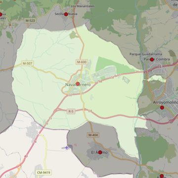

Nuestra Señora de la Asunción
- Arciprestazgo
- Navalcarnero
- Población
- Navalcarnero
- Dirección postal
- Pza. Veracruz, 1
- Código postal
- 28600
- Extensión
- 101,36 km² (10.136 ha)
- Teléfono
- 912 648 111
- Correo electrónico
- asuncionnavalcarnero@gmail.com


Descargar mapaLímites según decreto
Los del término municipal